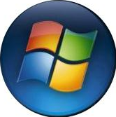

Navegadores de Internet
Navegadores de Internet servem para acessar sites na web. Há vários tipos de navegadores: móveis (para Android,
Windows Phone e iOS), para
dekstop (PCs Windows, Linux e Mac OS) e outras para dispositivos como smart TVs.
Gigantes conhecidos como:
- Opera;
- Google Chrome;
- Mozilla Firefox;
- Safari (Apple);
- Internet Explorer e Microsoft Edge.
Acesso em: 27/02/2025
Tipos de Sistemas Operacionais
Fundamentalmente, um sistema operacional é um software, que pode ser:
- Linux
- Windows
- Android
- MacOs
 iOS
iOS- UNIX
No entanto, ele não resume aquilo que seus olhos conseguem ver ou ao que você consegue interagir. Em outras palavras, é um programa que conversa diretamente com o hardware da sua máquina.
Disponível em: Alura - Sistemas OperacionaisAcesso em: 06/03/2025
| Retornar |